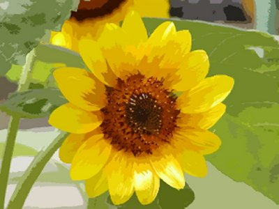

Research History
My research has been centered on computer graphics, while also extending to interactive modeling, kansei information processing, and other fundamental areas of information technology. Currently, based on these technologies, I am conducting research on digital content creation, especially methods for supporting animation and game production.
In computer graphics, my research has particularly focused on non-photorealistic image generation and computer animation. These research outcomes have been applied to visual production fields such as films, games, and digital media.
My research on interactive modeling deals with the input of three-dimensional shapes using sketches. I have developed methods for generating 3D models from hand-drawn sketches. This research has also been developed into design support systems for design and production.
Kansei information processing proposes methods for handling human impressions and sensibilities using computers. This research has been applied to image and video feature analysis, color design, and visual design support. It also contributes to improving human-computer interfaces and to constructing databases that can handle the knowledge of visual content creators. We call such databases digital scrapbooks. These studies are important for organizing and systematizing the knowledge of visual content creators.
Non-Photorealistic Rendering 1980–

This research explores image expression for supporting communication, interactive rendering, painterly expression, and real-time emphasized computer graphics. I have been working in this field since before the term “NPR” became widely used.
Interactive Modeling 1983–

This research includes interactive perspective drawing based on descriptive geometry, reconstruction of three-dimensional shapes from two-dimensional projection drawings, and interaction and modeling methods for generating 3D models from freehand sketch input. It also includes research on geometric modeling and subdivision surfaces.
CG Animation 1992–

This research focuses on exaggerated and simplified expressions in animation. It includes motion exaggeration using motion capture data and the proposal of techniques such as Motion Filter, Cartoon Blur, and Action Lines. These methods have also been extended to applications in real-time computer graphics.
Kansei Information Processing 1992–

This research has addressed image feature analysis for design support, color design, and kansei databases. It has also been applied to color design methods for character making.
Digital Content Creation 2007–

This research focuses on scenario writing, character making, analysis of lighting and camera work, digital scrapbooks, and design support methods for animation and game production.
Content Producing and Production Technology 2007–
This research concerns CG animation, game design, and game production technology. In the field of game design, it includes proposals for design methods using biological information, analysis and proposals for user interface design, and non-photorealistic rendering methods for real-time graphics and games.